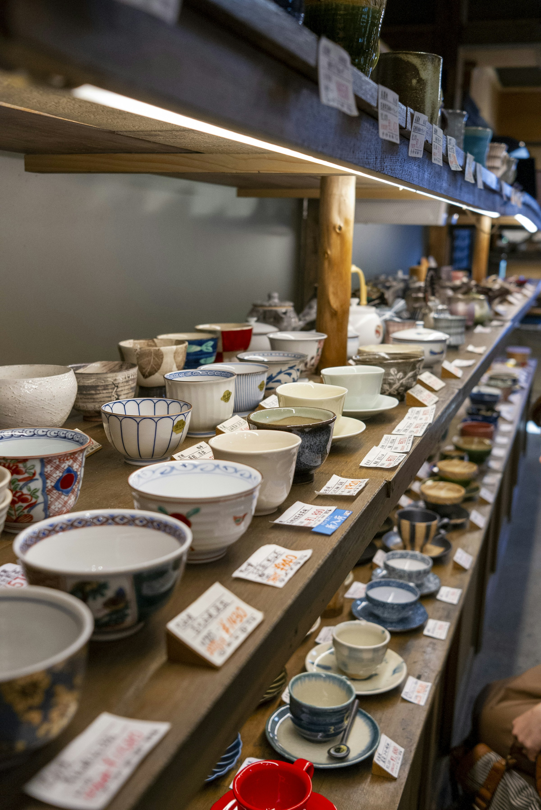
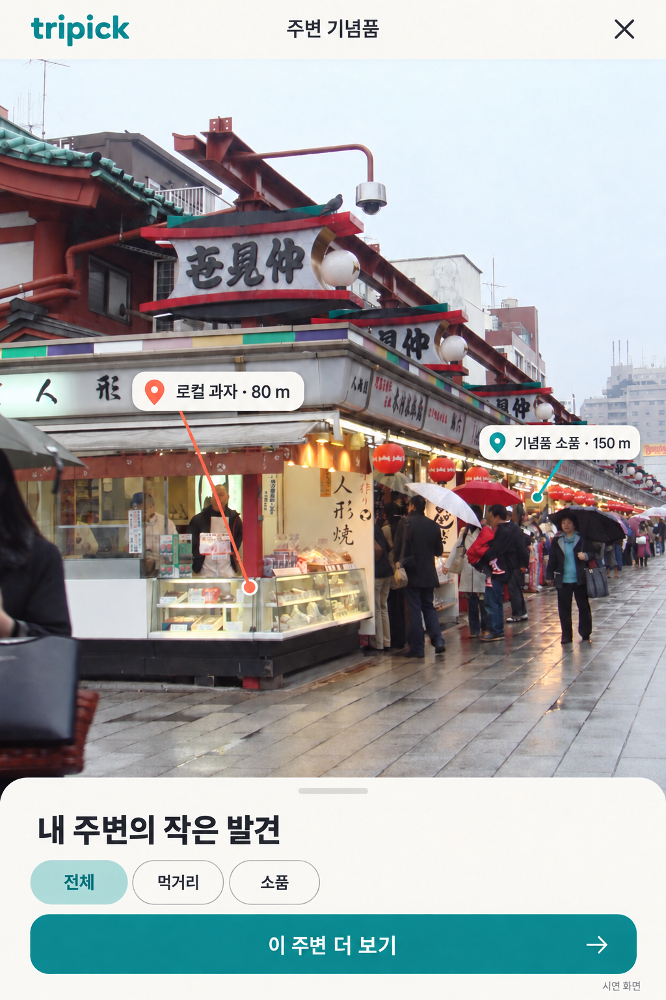
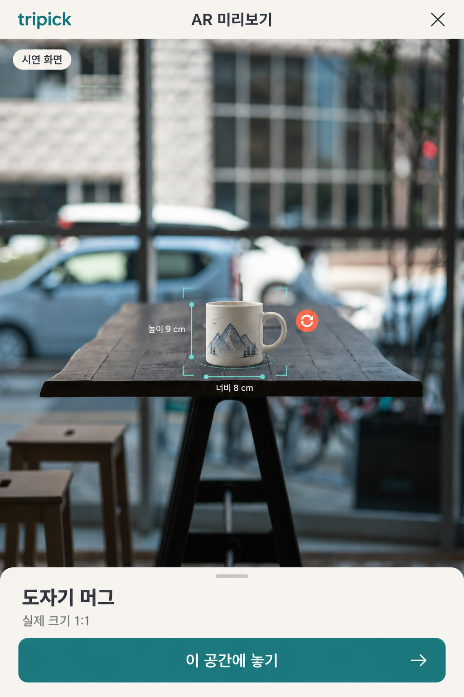
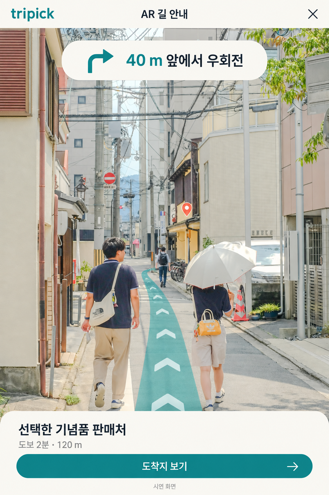
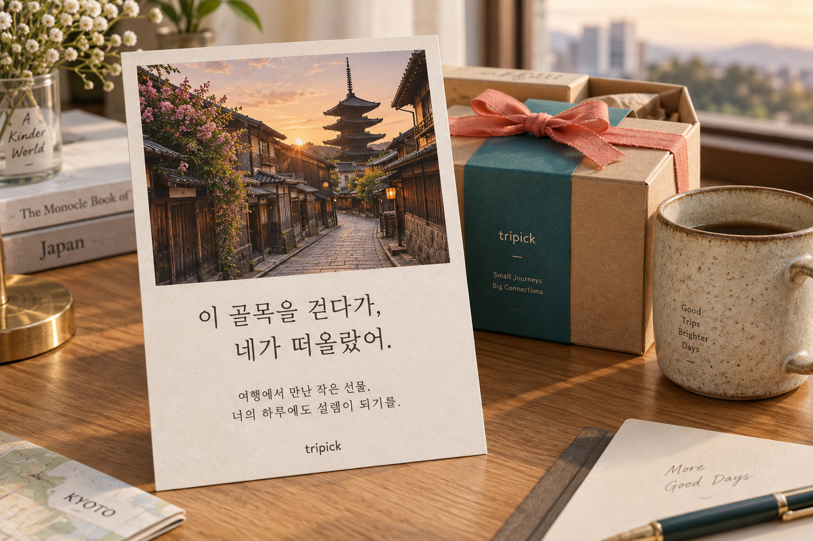

받는 사람의 취향
기념품을 고를 때
가장 먼저 생각하는 것

AI 기념품 추천 · 취향부터 구매 동선까지
누구에게 줄지, 얼마를 쓸지만 알려주세요.
취향에 맞는 기념품과 판매처를 빠르게 찾아
선물 고르는 시간을 줄여드려요.
차를 좋아하는 가족에게
나만의 티타임을 위한 픽
취향이 닮은 친구에게 ¥1,500
A LITTLE LESS WORRY
검색 창은 닫고, 여행에 조금 더 가까워지세요.
취향도 예산도 다른 사람들.
누구에게나 같은 선물은 아쉬우니까.
검색하고, 지도 켜고, 다시 검색하고.
낯선 거리에서 낭비하는 시간을 줄이세요.
남은 일정은 긴데 짐은 벌써 가득.
마음에 드는 선물을 포기하지 않도록.
기념품 추천 체험 · 여행지·대상·취향·예산으로 고르기
여러 사람에게 가볍게 나눌 선물도, 한 사람을 위해 신중하게 고를 선물도.
지금 필요한 방식으로 시작하세요.
추천 과정을 가볍게 경험해 보세요.
실제 제품 사진과 함께 나에게 맞는 후보를 비교해 보세요.
나눠주기 좋은 선물을 빠르게 골라볼까요?
현재 구현: 4개국 48개 제품(일본 27개) 기반 조건 추천 · 실시간 AI·재고 연동 전
카메라 너머 가까운 상점과 기념품을 확인하고,
마음에 드는 곳을 골라보세요.

실제 크기를 확인해 캐리어 수납을 가늠해요.
구매 전에 크기와 부피를 살펴보세요.

선택한 판매처까지 거리 위 안내를 따라가세요.
다음 일정 전, 짧은 시간도 알차게.


AI 스토리 카드 · 선물에 이야기를 담는 방법
어디에서 만났는지, 왜 네가 떠올랐는지.
선물에 담긴 이야기가 가장 오래 남으니까.
여행 사진과 메모, 확인된 지역·상품 정보를 바탕으로
AI가 카드의 초안을 만들어요. 당신의 말로 다듬어
세상에 하나뿐인 선물을 완성하세요.
해외배송 연결 · 가볍게 전하는 기념품
손에는 선물 대신, 다음 여행의 여유를.
지원 매장과 제휴 접수처에서 해외배송을 연결합니다.
마음에 드는 선물을 고르고
포장과 운반은 제휴처에 맡기고
선물 짐 없이, 여행을 마무리
나의 집 또는 소중한 사람에게
발견 · 추천 · AR 확인 · 전달
여행 전의 작은 저장이, 여행 중의 좋은 선택으로.
Tripick이 모든 순간을 함께 연결합니다.
현지 상점과 대표 기념품을 둘러보고, 다음 여행에서 만나고 싶은 것들을 모아두세요.
큐레이션 피드 · 관심 목록취향, 예산, 남은 시간을 반영해 후보를 좁히고, 여러 사람의 선물도 한 번에 정리해요.
AI 추천 · 예산 플래너AR로 크기와 포장을 살펴본 뒤, 선택한 상품을 만날 수 있는 매장으로 이동하세요.
AR 미리보기 · 길 안내선물을 고른 마음을 카드에 담고, 지원 매장에서 배송을 연결해 남은 여행을 가볍게.
스토리 카드 · 배송 연결GOOD TO KNOW
여러 사람에게 나눠줄 선물을 빠르게 고르고 싶은 여행자, 특정인의 취향을 생각해 선물하고 싶은 여행자, 구매 후 짐 부담을 줄이고 싶은 여행자에게 맞는 서비스입니다. 여행 전에도 여행지와 기념품을 발견하고 저장할 수 있어요.
빠른 추천은 가까운 판매처, 금액대, 거리, 개별 포장 같은 조건으로 후보를 좁힙니다. 맞춤 추천은 선물할 사람의 취향과 예산을 우선 반영하고, 왜 그 사람에게 어울리는지 설명하는 방식입니다.
기념품의 크기·외형·포장 형태를 실제 공간에 배치해 살펴보고, 캐리어에 필요한 공간을 가늠할 수 있도록 기획된 기능입니다. 주변 매장 탐색과 판매처까지의 AR 길 안내도 연결됩니다. 사용 가능 여부는 지원 상품과 기기에 따라 달라질 수 있어요.
현재 페이지는 Tripick의 서비스 경험을 소개하는 미리보기입니다. 추천 영역에서는 실제 제품 카탈로그를 대상·취향·예산으로 비교하고 판매처로 이동할 수 있습니다. 이 페이지의 직접 결제·실시간 AI 추천·AR 실행·배송 신청은 연결되어 있지 않습니다.